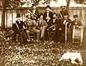

| The Castro-Breen Adobe fronts the Old Plaza and
Mission of San Juan Bautista.
This historic adobe was constructed in 1840 by Mexican General Jose Tiburcio Castro who eventually sold the estate to the Breen family in 1849. SJBHS photo. |
|
|  | Community band of San Juan Bautista, CA, ca.
1890. Note the variety of musical
instruments and the dog in the foreground. SJBHS photo. to. |
| Photo of US Cavalry military parade in downtown
San Juan Bautista. Circa 1900.
SJBHS photo. |
|
| Connecticut Fire Insurance Company certificate
of insurance for a businessman in
early San Juan Bautista. These and many other related documents constitute the collections of the San Juan Bautista Historical Society. SJBHS document. |
|
| The paving of 3rd Street, the main roadway through
the community of San Juan
Bautista, in 1907. Note the drainage ditche in the foreground, and the horses and carriages in background. SJBHS photo. |
|
| View of the Birmingham House on 3rd and Monterey
streets. This is one of the
many late 19th Century and early 20th Century homes of the community of San Juan Bautista. Note the double gabled roof. SJBHS photo. |
|
| Main or 3rd Street paving project and horses
and equipment used in the paving of
the main street of San Juan Bautista. Circa 1907-08. SJBHS photo. |
|
 |
Turn of the century photo of the front of a brothel
that has since been converted into
the present-day Cutting Horse Restaurant on 3rd Street in downtown San Juan Bautista. SJBHS photo. |
| View of the rear porch area of the Castro-Breen
Adobe prior to the restorations and
renovations of recent years. The adobe now stands within the San Juan Bautista State Historic Park created in 1933. SJBHS photo. |
|
| A view of the Victorian era nunnery that once
stood behind the Old Mission Church of
San Juan Bautista. Recent archaeological work in this area has identified the founda- tion area of the old nunnery. SJBHS photo. |
|
| The Crane House located on 2nd Street across
the road from Old Mission San Juan
Bautista. The bowed roof of the old Crane House lends to its very distinctive archi- tectural style. SJBHS photo. |
|
| The annual Fiesta of San Juan Bautista is an
historic tradition whose roots center
on efforts to maintain and restore the Old Mission of San Juan Bautista. Here, women and vehicles are pictured in a photo view of the Old Plaza. SJBHS photo. |
|
| View of the facade of the Moore Brothers General
Merchandise mercantile store on
3rd or main street in downtown San Juan Bautista. SJBHS photo. |
|
| Interior view of the main church of Old Mission
San Juan Bautista during one of the
church's many religious services. Photo taken from choir loft at front of church. Note sealed archways and massive wooden beams. SJBHS photo. |
|
| General view of 3rd Street in San Juan Bautista.
Photo taken prior to the paving
project of 1907. SJBHS photo. |
|
| View of the old bar in the Kemp Saloon of San
Juan Bautista. Circa 1860. SJBHS
photo. |

Please note that this portion of the web site
is a work in progress. Once linked to larger versions
of the images included here as thumbnails, you
will be able to click on an image in order to see
a larger version for the purposes of study and
research.